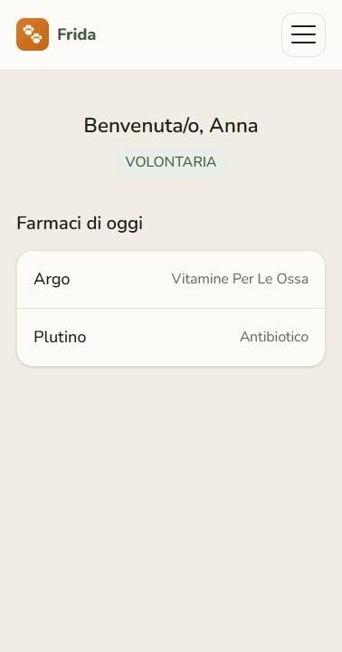
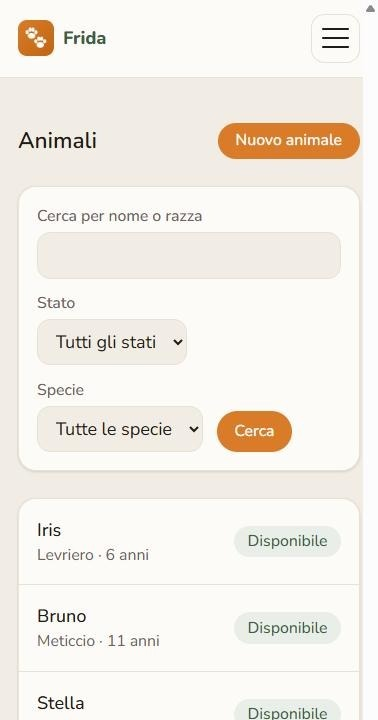
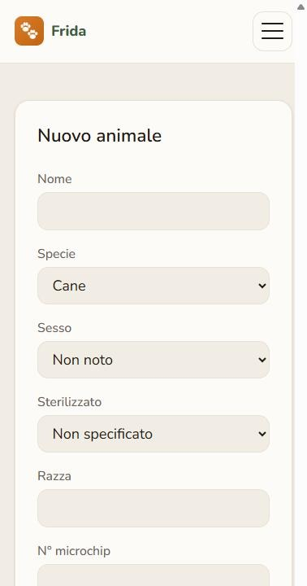
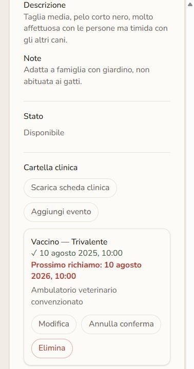
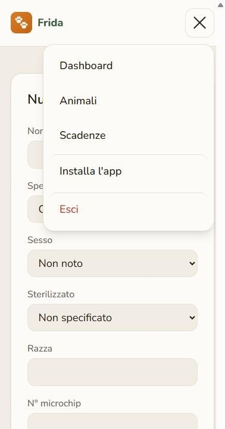

Case study · Gestionale
Frida: gestionale per il rifugio LIDA Catania
Un rifugio che ospita più animali contemporaneamente deve tenere traccia in modo affidabile di anagrafica, stato clinico e scadenze di ciascuno, spesso con più volontari che si alternano e non sempre con dimestichezza tecnica. Ho costruito Frida, l'applicazione web usata dal rifugio LIDA Catania per questo: mobile-first, con un'interfaccia semplice pensata anche per chi non è abituato a strumenti digitali complessi, e installabile come app sul telefono.

Il contesto
Un rifugio con più animali, gestito da più volontari, ha bisogno di un'anagrafica condivisa e di scadenze di vaccinazioni e trattamenti che non vadano perse. Lo strumento deve essere semplice da usare per chiunque presti servizio, non solo per chi è pratico di tecnologia.
Anagrafica animali
L'inserimento di un nuovo animale avviene tramite un form con campi ampi ed etichette chiare (nome, specie, sesso, razza, sterilizzazione, microchip, data di nascita, descrizione, note, foto). L'elenco animali è filtrabile per nome, razza, stato (disponibile, in affido, adottato) e specie.


Cartella clinica e scadenze
Ogni animale ha uno storico di vaccinazioni, antiparassitari, visite veterinarie e terapie. Per gli eventi ricorrenti la prossima scadenza è calcolata automaticamente; quando una scadenza è superata, viene evidenziata in rosso nella scheda dell'animale, così chi presta servizio vede subito chi ha bisogno di attenzione senza dover controllare manualmente animale per animale.

Le scadenze superate sono evidenziate in rosso nella scheda di ogni animale.
Pensata per chi la usa ogni giorno
Frida è progettata prima per lo smartphone, con testo leggibile e layout semplice, pensata anche per volontari meno abituati alla tecnologia. È installabile come app sul telefono dal menu di navigazione, così si apre come un'app qualsiasi senza passare dal browser ogni volta.
